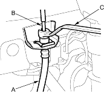
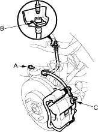
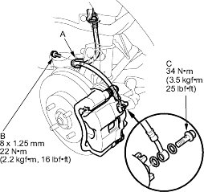
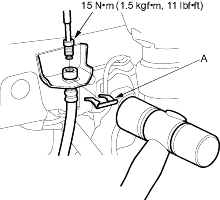

- Do not spill brake fluid on the vehicle; it may damage the paint; if brake fluid gets on the paint, wash it off immediately with water.
- To prevent dripping, cover disconnected pipe joints with rags or shop towels.
- Before reassembling, check that all parts are free of dust and other foreign particles.
- Replace parts with new ones whenever specified to do so.
- Replace the brake hose (A) if the hose is twisted, cracked or if it leaks.

- Disconnect the brake hose from the brake line (B) using a 10 mm flare-nut wrench (C).
- Remove the flange bolt (A) and remove the brake hose brackets from the damper.

- Remove and discard the hose clip (B).
- Remove the banjo bolt (C) and remove the brake hose from the calliper.
- Install the brake hose bracket (A) on the damper with the flange bolt (B) first, then connect the brake hose to the calliper with the banjo bolt (C) and new sealing washers (D).

- Install the hose onto the hose bracket on the body with a new hose clip (A).

- Connect the brake line to the brake hose.
- After installing the brake hose, bleed the brake system (see page 19-7).
- Perform the following checks:
- Check the brake hose and line joint for leaks and tighten if necessary.
- Check the brake hoses for interference and twisting.